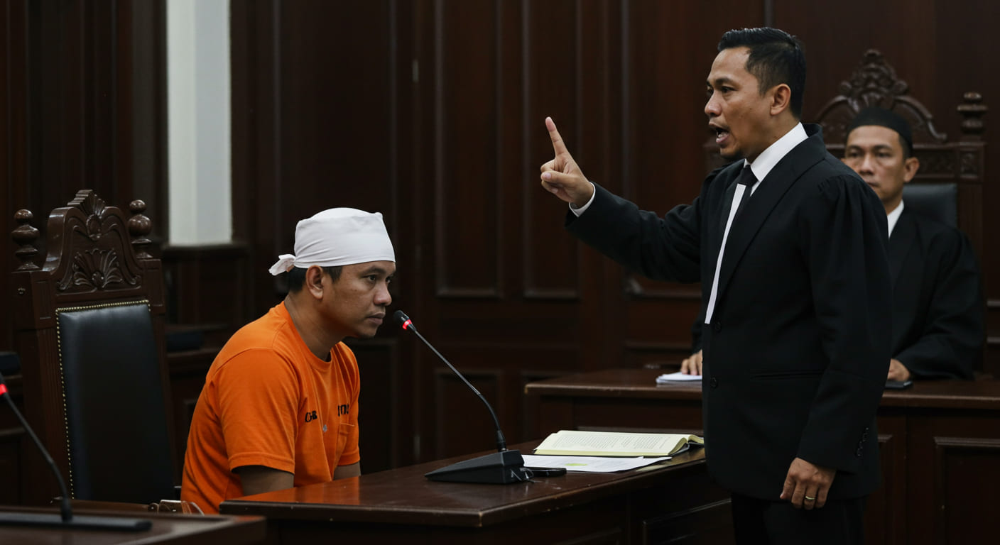

Jika Anda di tuduh menjadi pelaku atau Menjadi Terduga Pelaku Kasus Pidana di Indonesia: Panduan Lengkap untuk Memahami Proses Hukum dan Hak-Hak Terduga

Menjadi terduga dalam kasus pidana di Indonesia adalah pengalaman yang penuh tantangan. Dalam situasi ini, sangat penting bagi terduga untuk mengetahui hak-haknya, prosedur hukum yang harus dihadapi, dan bagaimana cara melindungi diri melalui pembelaan hukum yang tepat. Artikel ini akan membahas secara rinci berbagai aspek yang perlu diketahui oleh terduga pelaku dalam kasus pidana di Indonesia, termasuk hak-hak yang dimiliki, proses hukum yang berlaku, serta pentingnya memiliki pengacara yang berpengalaman, terutama jika Anda berada di wilayah Brebes, Tegal, atau Purwokerto.
I. Hak Terduga Pelaku dalam Kasus Pidana di Indonesia
Setiap orang yang menjadi terduga dalam kasus pidana memiliki hak-hak yang dilindungi oleh hukum, sebagaimana diatur dalam Undang-Undang Nomor 8 Tahun 1981 tentang Hukum Acara Pidana (KUHAP). Beberapa hak utama yang dimiliki oleh terduga pelaku pidana adalah sebagai berikut:
Hak untuk Didampingi Pengacara Setiap terduga pelaku pidana berhak didampingi oleh pengacara, baik pada saat penyidikan, penuntutan, maupun di pengadilan. Pengacara berperan dalam memberikan pembelaan hukum yang adil serta melindungi hak-hak terduga selama proses hukum berlangsung.
Hak untuk Diam Sebagai terduga, Anda tidak diwajibkan untuk memberikan keterangan yang bisa memberatkan diri sendiri. Hak untuk diam ini dikenal dengan istilah "right to remain silent". Anda tidak perlu menjawab pertanyaan dari penyidik atau pihak berwenang jika jawaban Anda bisa digunakan sebagai bukti terhadap diri Anda.
Hak atas Pembelaan Hukum yang Adil Terduga berhak mendapatkan pembelaan hukum yang adil di pengadilan. Ini berarti Anda memiliki hak untuk membuktikan bahwa Anda tidak bersalah, dan hukum harus memberikan kesempatan yang sama kepada semua pihak untuk membela diri.
II. Proses Hukum bagi Terduga Pelaku Pidana di Indonesia
Proses hukum dalam kasus pidana di Indonesia dimulai dari tahap penyidikan hingga persidangan di pengadilan. Setiap tahap memiliki prosedur tertentu yang perlu Anda pahami agar hak-hak Anda dapat terlindungi. Berikut adalah tahapan-tahapan utama dalam proses hukum pidana:
Penyidikan Penyidikan dimulai ketika pihak berwenang (seperti polisi) mendapatkan informasi mengenai adanya dugaan tindak pidana. Pada tahap ini, penyidik akan mengumpulkan bukti dan keterangan untuk menentukan apakah suatu tindak pidana benar terjadi dan siapa yang menjadi pelakunya. Terduga berhak didampingi pengacara selama proses penyidikan.
Penahanan Jika penyidik merasa cukup bukti untuk menahan terduga, maka dapat dilakukan penahanan. Penahanan tidak bisa dilakukan sembarangan dan harus memenuhi syarat-syarat tertentu, seperti adanya dugaan kuat bahwa terduga akan melarikan diri atau merusak barang bukti.
Penuntutan Jika hasil penyidikan menunjukkan adanya cukup bukti, maka kasus tersebut akan diteruskan ke tahap penuntutan oleh jaksa. Pada tahap ini, jaksa akan menyusun dakwaan berdasarkan bukti-bukti yang ada.
Persidangan Di pengadilan, proses hukum berlanjut dengan sidang yang dihadiri oleh hakim, jaksa, pengacara pembela, dan saksi-saksi. Terduga pelaku berhak untuk membela diri dan memberikan bukti yang dapat membuktikan bahwa ia tidak bersalah.
III. Pengacara Pidana di Brebes, Tegal, dan Purwokerto
Jika Anda menjadi terduga dalam kasus pidana di wilayah Brebes, Tegal, atau Purwokerto, sangat penting untuk memiliki pengacara pidana yang berpengalaman dan kompeten. Pengacara akan membantu Anda melalui setiap langkah proses hukum, dari penyidikan hingga persidangan. Mereka juga akan memberikan saran strategis, menyusun pembelaan hukum, dan memastikan bahwa hak-hak Anda terlindungi.
Menggunakan jasa pengacara yang berpengalaman di wilayah tersebut sangat berguna, karena mereka memahami hukum setempat dan memiliki pengalaman menghadapi proses hukum di pengadilan daerah tersebut. Mencari pengacara pidana yang memiliki reputasi baik di Brebes, Tegal, atau Purwokerto dapat membuat perbedaan besar dalam hasil kasus Anda.
IV. Bukti-Bukti yang Diperlukan dalam Kasus Pidana
Dalam proses hukum pidana, bukti adalah kunci utama untuk membuktikan apakah terduga bersalah atau tidak. Jenis bukti yang diperlukan bervariasi tergantung pada jenis tindak pidana, namun beberapa bukti umum yang dapat digunakan dalam pembelaan adalah:
Bukti Tertulis Dokumen atau catatan yang berkaitan dengan kasus, seperti kontrak, surat perjanjian, atau bukti transaksi.
Bukti Saksi Keterangan dari saksi yang melihat atau mendengar peristiwa yang terjadi. Saksi bisa memberikan informasi yang membantu untuk membuktikan apakah terduga melakukan tindakan pidana atau tidak.
Bukti Fisik Barang bukti yang ditemukan di tempat kejadian perkara (TKP), seperti senjata atau barang yang digunakan untuk melakukan tindak pidana.
Bukti Elektronik Dalam beberapa kasus, bukti elektronik, seperti rekaman video, email, atau pesan teks, juga bisa menjadi bukti yang kuat.
V. Proses Pembelaan dalam Persidangan Pidana
Setelah proses penyidikan dan penuntutan, kasus pidana akan dibawa ke pengadilan. Di pengadilan, terduga pelaku memiliki kesempatan untuk membela diri. Proses pembelaan meliputi beberapa tahap, antara lain:
Penyampaian Pembelaan oleh Pengacara Pengacara akan menyampaikan pembelaan yang menjelaskan bahwa terduga tidak bersalah atau tidak memenuhi unsur tindak pidana yang didakwakan.
Penyampaian Bukti Pembelaan akan disertai dengan bukti-bukti yang mendukung, baik itu bukti fisik, saksi, maupun bukti lainnya yang dapat mengurangi atau membantah tuduhan yang diajukan.
Kesempatan untuk Membuktikan Ketidakbersalahan Terduga memiliki hak untuk membuktikan bahwa dirinya tidak bersalah, dan pengadilan harus mendengarkan pembelaan ini sebelum memutuskan vonis.
VI. Apa yang Harus Dilakukan Jika Terduga Pelaku Pidana Diinterogasi Polisi?
Jika Anda menjadi terduga dalam kasus pidana dan diinterogasi oleh polisi, Anda memiliki hak untuk tidak memberikan jawaban yang dapat memberatkan diri sendiri. Berikut adalah beberapa hal yang harus dilakukan jika Anda diinterogasi:
Minta Didampingi Pengacara Anda berhak meminta kehadiran pengacara selama proses interogasi. Pengacara akan melindungi hak Anda dan memastikan bahwa proses interogasi dilakukan secara sah.
Gunakan Hak untuk Diam Anda tidak diwajibkan untuk memberikan keterangan yang memberatkan diri. Jika Anda merasa tidak nyaman atau bingung, lebih baik menggunakan hak untuk diam.
Jangan Menandatangani Dokumen yang Tidak Anda Pahami Jika Anda tidak mengerti isi dokumen yang diberikan selama interogasi, jangan menandatanganinya. Anda berhak untuk meminta klarifikasi sebelum menandatangani apapun.
Kesimpulan
Menjadi terduga dalam kasus pidana di Indonesia adalah situasi yang penuh tekanan, tetapi dengan pengetahuan yang tepat tentang hak-hak Anda dan prosedur hukum, Anda dapat menghadapi proses ini dengan lebih percaya diri. Penting untuk selalu mendapatkan bantuan dari pengacara yang berpengalaman, terutama yang berpraktik di daerah seperti Brebes, Tegal, dan Purwokerto, untuk memastikan bahwa Anda mendapatkan pembelaan hukum yang adil dan efektif. Jangan ragu untuk menggunakan hak-hak Anda, seperti hak untuk didampingi pengacara, hak untuk diam, dan hak untuk mendapatkan pembelaan yang adil di pengadilan.